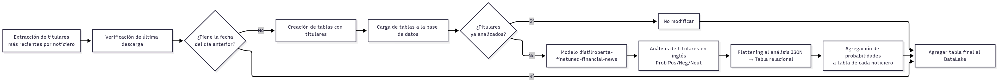

Modelos Predictivos
Modelos de análisis de sentimiento
Se ha decidido utilizar dos modelos predictivo en el cual los dos se utilozaron para predecir la probabilidad de que un titular sea negativo, positivo o neutral. los dos modelos son bert-base-multilingual-uncased-sentiment[multilingual] y distilroberta-finetuned-financial-news-sentiment-analysis [inglés]. Estos dos modelos fueron seleccionados por su rendimiento en clasificación de sentimientos y por su cobertura en distintos idiomas. Dado que las fuentes analizadas incluyen tanto medios en inglés como en español, se ha considerado necesario emplear modelos específicos para cada idioma con el fin de maximizar la precisión de los resultados.

Comparación y justificación de uso
La principal diferencia entre ambos modelos radica en su especialización. El modelo en inglés ofrece un mejor desempeño en el contexto financiero gracias a su ajuste en noticias económicas, mientras que el modelo en español, aunque más generalista, permite cubrir de manera efectiva los textos en este idioma. En conjunto, la combinación de ambos modelos garantiza un análisis más robusto y equilibrado de noticias financieras procedentes de distintas fuentes y en diferentes idiomas.
Tabla comparativa de modelos
Modelo |
Idioma(s) |
Ventajas |
Limitaciones |
|---|---|---|---|
mrm8488/distilroberta-finetuned-financial-news-sentiment-analysis |
Inglés |
Especializado en noticias financieras, mayor precisión en este dominio. |
Solo aplica a textos en inglés. |
nlptown/bert-base-multilingual-uncased-sentiment |
Multilingüe (incluye español) |
Cobertura en más de 100 idiomas, adecuado para análisis en español. |
No especializado en finanzas, menor precisión contextual. |
Automatización del flujo de trabajo con n8n
En la automatización de la ingesta y el procesamiento de datos se ha empleado n8n, una herramienta de workflow automation de código abierto. Su función principal es permitir la integración entre múltiples servicios, APIs y bases de datos mediante la creación de flujos de trabajo visuales que se ejecutan de manera automática en función de determinados eventos o programaciones. A partir del trigger que en nuestro caso de de tiempo (00:00 todos los dias), los nodos se van ejecutando en orden lógico, permitiendo que la información fluya automáticamente entre servicios sin intervención manual.En conjunto, n8n se convierte en un componente clave para la orquestación de datos en este proyecto, permitiendo que el análisis de sentimiento y financiero se sustente en información

Flujo de utilizacion de los modelos
Dentro del datalake definido en el módulo de Datos y Preparación, se encuentra la tabla unificada denominada NOTICIAS_ANALIZADAS. A partir de esta base de datos se extraen los titulares procedentes de los distintos noticieros. Posteriormente, mediante un árbol de decisión se determina el idioma de cada titular (inglés o español). Según el resultado, se aplica el modelo de predicción correspondiente, previamente entrenado para el análisis de sentimiento en cada idioma.
Generacion de las columnas con tipo de titulos
Una vez aplicados los modelos de análisis de sentimiento, se generan cuatro variables principales: SENTIMIENTO_RESULTADO, PROBABILIDAD_POSITIVO, PROBABILIDAD_NEGATIVA y PROBABILIDAD_NEUTRAL. Estas variables permiten determinar de manera objetiva la clasificación final del texto en función de su polaridad. Posteriormente, los resultados se incorporan a la tabla principal de Noticias_Analizadas y se almacenan nuevamente en Snowflake, lo que garantiza su disponibilidad para futuros análisis, tanto de carácter técnico como de integración con otros indicadores financieros.

Analisis de Frontera de eficiencia
Para la selección de nuestra cartera emplearemos el modelo de media-varianza de Markowitz, considerado la base de la Teoría Moderna de Carteras. Este enfoque es ampliamente utilizado en finanzas porque permite encontrar la combinación óptima de activos equilibrando riesgo y rendimiento esperado. El procedimiento consiste en simular 50.000 carteras aleatorias con diferentes ponderaciones de activos. Posteriormente, se identifican aquellas que cumplen con dos criterios clave:
Cartera de mínima varianza: la que presenta el menor nivel de riesgo posible.
Cartera con ratio de Sharpe máximo: la que ofrece la mejor relación entre rendimiento y riesgo ajustado por la tasa libre de riesgo.
Ver teoría en Modelo de Markowitz
El primer aspecto a considerar es que los resultados de nuestro modelo se generan siempre con datos actualizados hasta el día anterior en todas las bases de datos. Dichos resultados se almacenan en un datalake implementado en Snowflake, el cual se encuentra en constante actualización. Por ello, la primera fase de nuestro análisis consiste en establecer la conexión con Snowflake y asegurar la correcta creación, configuración y mantenimiento del datalake.
Una vez completada esta etapa, el modelo se vincula con las acciones seleccionadas por el usuario en función de su análisis fundamental. Para cada activo elegido, se verifican las tendencias históricas y se realizan diferentes simulaciones con variaciones en los porcentajes de asignación.
De este modo, el modelo permite seleccionar la combinación más eficiente considerando no solo los criterios de diversificación cuantitativa, sino también el análisis fundamental, el análisis descriptivo de los datos históricos y el análisis de sentimiento obtenido a partir de noticias sectoriales e industriales.
El cálculo de los rendimientos de los activos es una etapa fundamental previa a cualquier análisis de carteras. A partir de los precios históricos, se obtienen las variaciones porcentuales que reflejan cómo evoluciona el valor de cada activo en el tiempo.
1rendimientos = (prices - prices.shift(1)) / prices.shift(1)
Una vez obtenidos los datos necesarios para el análisis principal, procedemos a la simulación de 50.000 portafolios aleatorios. Este proceso nos permite explorar un amplio rango de combinaciones posibles entre los activos y, de este modo, identificar aquellas carteras que ofrecen el mejor equilibrio entre riesgo y rendimiento esperado.
1for x in range(50000):
2 pesos = np.random.random(numero_activos)
3 pesos /= np.sum(pesos)
4 rendimiento = np.sum(pesos * rendimientos.mean()) * 252
5 riesgo = np.sqrt(np.dot(pesos.T, np.dot(rendimientos.cov() * 252, pesos)))
6 rendimientos_portafolio.append(rendimiento)
7 riesgo_portafolio.append(riesgo)
8 peso_portafolio.append(pesos)
Con este procedimiento se han generado 50.000 carteras simuladas, cada una con su respectivo nivel de riesgo y rendimiento esperado. A partir de estos resultados, y considerando una tasa libre de riesgo del 3%, se calcula el ratio de Sharpe, lo que nos permite identificar la combinación de acciones más eficiente en términos de la relación rentabilidad–riesgo. La siguiente tabla muestra algunos ejemplos representativos de estas carteras:
Rendimientos |
Riesgos |
PesoACS.MC |
PesoAENA.MC |
PesoBBVA.MC |
PesoCABK.MC |
PesoELE.MC |
PesoENG.MC |
PesoFER.MC |
PesoIAG.MC |
PesoIBE.MC |
PesoITX.MC |
PesoMAP.MC |
PesoREP.MC |
PesoSAN.MC |
PesoTEF.MC |
|---|---|---|---|---|---|---|---|---|---|---|---|---|---|---|---|
0.094535 |
0.236939 |
0.056633 |
0.050586 |
0.146062 |
0.077725 |
0.046691 |
0.035503 |
0.113892 |
0.069035 |
0.062491 |
0.131826 |
0.036659 |
0.013266 |
0.052721 |
0.106909 |
0.088686 |
0.247779 |
0.150650 |
0.047172 |
0.018697 |
0.065942 |
0.009546 |
0.004347 |
0.037379 |
0.134567 |
0.145345 |
0.096339 |
0.017419 |
0.038019 |
0.119666 |
0.114913 |
0.076873 |
0.232206 |
0.130143 |
0.112952 |
0.103699 |
0.046427 |
0.117658 |
0.066646 |
0.027429 |
0.084714 |
0.030029 |
0.094975 |
0.118723 |
0.011767 |
0.007015 |
0.047825 |
1varianza_minima = Matriz_portafolios.iloc[Matriz_portafolios['Riesgos'].idxmin()]
2
3risk_free = 0.03
4portafolio_optimo = Matriz_portafolios.iloc[
5 ((Matriz_portafolios['Rendimientos'] - risk_free) / Matriz_portafolios['Riesgos']).idxmax()
6]
Gráfica de la frontera de eficiencia
Este gráfico es un ejemplo con una cartera del IBEX35 el cual representa la frontera eficiente obtenida a partir de la simulación de 50.000 combinaciones de activos. En ek eje horizontal tenemos el riesgo del portafolio medido como volatilidad y en el eje vertical tenemos el rendimiento esperado por el portafolio. La nuve de puntos son los portafolios creados aleatoriamente que combina cada uno de los pesos de las acciones de cada portafolio.
La estrella verde, abajo a la izquierda, es la cartera con el menor riesgo posible, aunque su rentabilidad es moderada y la estrella azul, arriba a la derecha es la cartera más eficiente en términos de relación riesgo–rentabilidad, considerando la tasa libre de riesgo.